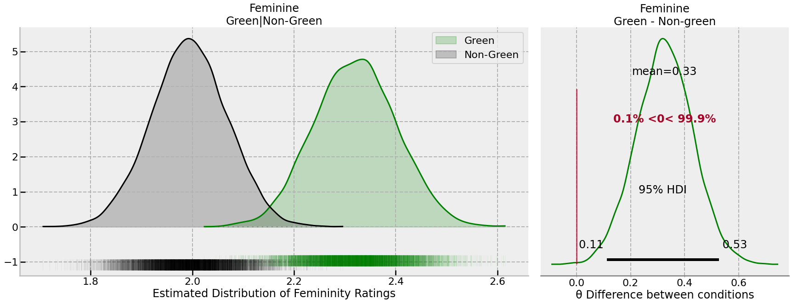
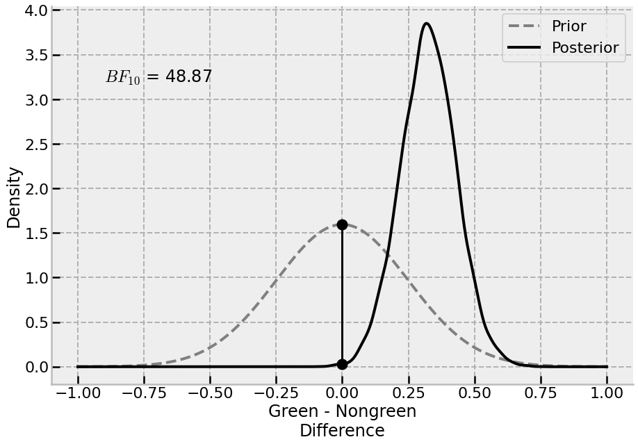
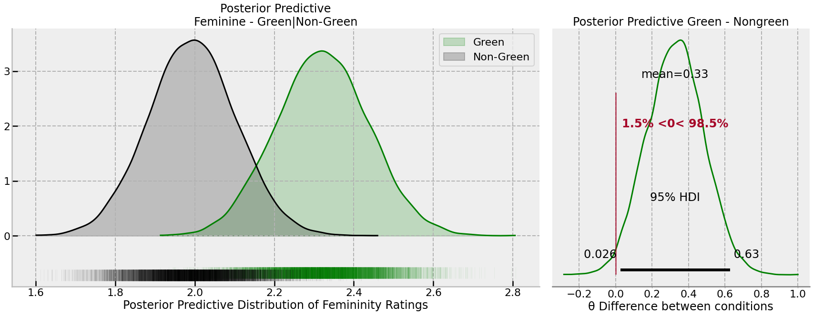

# Imports
import arviz as az
import bambi as bmb
import numpy as np
import pandas as pd
import pymc as pm
import seaborn as sns
import matplotlib.pyplot as plt
import scipy.stats as st
# Set matplotlib style
plt.style.use('bmh')
# Read in data
data = pd.read_csv('Phase 2 Reproduction Materials/Study 2 Data September 2015.csv')
data.head()Multi100 Collaboration Project: Is Eco-Friendly Unmanly?
Bayesian
PyMC
bambi
reanalysis
A Bayesian hierarchical re-analysis of Brough et al. (2016) for the Centre for Open Science’s Multi100 project, including a Savage-Dickey Bayes Factor.
Earlier this year I responded to an invitation to take part in the MultiAnalysis Collaboration Project, run by the Centre for Open Science. The project aims to obtain at least five different analyses for 100 different papers published, with open data, in psychology. I opted for the below paper, published in 2016 — Is Eco-Friendly Unmanly? The Green-Feminine Stereotype and Its Effect on Sustainable Consumption. The organisers selected a single claim from each paper that appears to be the ‘central’ conclusion, and participants in the project have to test it — that’s more or less it. The claim in this paper is:
…consumers who engaged in green behavior were perceived …. as more feminine than consumers who engaged in nongreen behavior. (p. 571.)
I used a Bayesian hierarchical model here, and because the project required it, I had to figure out how to carry out a Bayes Factor hypothesis test with Python. This led me down a rabbit hole of reading about the Savage-Dickey density ratio, which is surprisingly (magically, even) quite easy to compute in comparison to the horror of marginal likelihoods of complex models. That said, I’m still not certain this is all correct, but I’m satisfied the posterior probabilities, if not the Bayes Factor, are good. The analysis and data is all on the OSF.
Multi100 Analysis — NF503
Is Eco-Friendly Unmanly? The Green-Feminine Stereotype and Its Effect on Sustainable Consumption
| SubPool | V1 | V8 | V9 | Intro | M_NG_19 | M_NG_20 | M_NG_23 | M_NG_24 | M_NG_25 | … | F_G_32 | F_G_33 | F_G_34 | Q13 | Age | Gender | GenderIden_1 | Dating_1 | Dating_2 | Status | |
|---|---|---|---|---|---|---|---|---|---|---|---|---|---|---|---|---|---|---|---|---|---|
| 0 | ND | R_a2xOgJn7aY967yJ | 9/25/2015 7:00 | 9/25/2015 7:02 | 1 | 1.0 | 2.0 | 4.0 | 3.0 | 3.0 | … | NaN | NaN | NaN | how we perceive ourselves | 33 | 2 | 84.0 | 100.0 | 0.0 | 1 |
| 1 | ND | R_9KB7Aqj8Dw5NYAR | 9/25/2015 7:00 | 9/25/2015 7:02 | 1 | NaN | NaN | NaN | NaN | NaN | … | 3.0 | 4.0 | 1.0 | Environmental awareness | 21 | 1 | 76.0 | 0.0 | 100.0 | 1 |
| 2 | ND | R_78605PJdv9gl2g5 | 9/25/2015 7:00 | 9/25/2015 7:02 | 1 | 1.0 | 1.0 | 1.0 | 1.0 | 1.0 | … | NaN | NaN | NaN | perceptions | 27 | 1 | 65.0 | 0.0 | 100.0 | 2 |
| 3 | ND | R_6o5G3vGXbEi8LTT | 9/25/2015 7:00 | 9/25/2015 7:03 | 1 | NaN | NaN | NaN | NaN | NaN | … | NaN | NaN | NaN | attitudinal perceptions to reusable bags | 29 | 1 | 75.0 | 2.0 | 99.0 | 2 |
| 4 | ND | R_4IYda5xCDnq0Kln | 9/25/2015 7:01 | 9/25/2015 7:03 | 1 | NaN | NaN | NaN | NaN | NaN | … | 1.0 | 4.0 | 1.0 | Perception of recycling. | 29 | 1 | 83.0 | 0.0 | 100.0 | 2 |
5 rows × 56 columns
There is no coding scheme evident for Gender, i.e. it is not clear whether 1 or 2 is female/male. The paper reports 45.9% were male, so we should be able to infer from that:
# What is what?
data['Gender'].value_counts(normalize=True).round(2)2 0.54
1 0.46
Name: Gender, dtype: float64‘1’ is probably male.
Step 1
First we must tidy the data up into a long-form dataset, and clear up the variable names (e.g. M_NG_19) to get a clearer sense of conditions. We also use the variable coding for each perception from Study 2 Survey September 2015.docx to more clearly label the perceptual trait ratings the participants gave.
# Variable coding from 'Study 2 Survey September 2015.docx'
recoding = {34: 'wasteful', 32: 'masculine',
27: 'macho', 28: 'aggressive',
24: 'eco-friendly', 25: 'feminine',
33: 'sensitive', 26: 'gentle',
19: 'athletic', 20: 'attractive',
23: 'curious'
}
# Convert to long format and do some cleaning up
data_l = (data
.melt(id_vars=['SubPool', 'V1', 'Age', 'Gender', 'GenderIden_1', 'Dating_1', 'Dating_2', 'Status'],
value_vars=data.loc[:,'M_NG_19':'F_G_34'].columns,
var_name='condition', value_name='rating')
.pipe(lambda df_: df_.join(df_['condition'].str.split('_', expand=True)))
.rename(columns={0: 'target_sex', 1: 'green', 2: 'perception', 'V1': 'pid'})
.rename(columns=str.lower)
.assign(perception=lambda x: x['perception'].astype(int))
.replace({'perception': recoding,
'target_sex': {'M': 'male', 'F': 'female'},
'green': {'NG': 'non-green', 'G': 'green'},
'gender': {1: 'male', 2: 'female'}})
.drop(columns='condition')
)
# Drop missing values in 'rating' - between-participants design means not everyone rated all combinations
data_l = data_l.dropna(subset='rating').reset_index(drop=True)
display(data_l.head())
display('Participant counts', data_l.groupby('green')['pid'].nunique())
display('Missing data', data_l.isna().any())| subpool | pid | age | gender | genderiden_1 | dating_1 | dating_2 | status | rating | target_sex | green | perception | |
|---|---|---|---|---|---|---|---|---|---|---|---|---|
| 0 | ND | R_a2xOgJn7aY967yJ | 33 | female | 84.0 | 100.0 | 0.0 | 1 | 1.0 | male | non-green | athletic |
| 1 | ND | R_78605PJdv9gl2g5 | 27 | male | 65.0 | 0.0 | 100.0 | 2 | 1.0 | male | non-green | athletic |
| 2 | ND | R_cNrHv7l4bzAPzo1 | 19 | female | 68.0 | 100.0 | 0.0 | 1 | 1.0 | male | non-green | athletic |
| 3 | ND | R_cIl6ai9lZGVTEih | 28 | male | 87.0 | 0.0 | 100.0 | 2 | 2.0 | male | non-green | athletic |
| 4 | ND | R_0xi4MaYTLcWON7v | 25 | male | 66.0 | 0.0 | 100.0 | 1 | 2.0 | male | non-green | athletic |
'Participant counts'
green
green 94
non-green 100
Name: pid, dtype: int64There is also missing data in the genderiden_1 and dating_ variables. These will be used as additional predictors, so these missing values will be dropped — i.e. a complete-case design will be used.
# Complete cases - drop all missing in the three named variables
data_l = data_l.dropna(subset=['genderiden_1', 'dating_1', 'dating_2']).reset_index(drop=True)
data_l.pid.nunique()171Step 2
We now ready to specify a model, and lay out an inference plan.
The aim is to assess whether consumers who engaged in green behaviour are perceived as more feminine, with participants making ratings of vignettes. The claim is straightforward; however the data-generating process is more complex, with participants being allocated to one of four conditions (e.g. male-green, female-nongreen), and provided multiple ratings of the same vignette. In addition, there are variables that may affect these ratings (e.g., participant gender, interest in dating males or females) that could feasibly impact the ratings.
The original paper created a ‘femininity index’ by averaging together several traits (feminine, gentle, sensitive). This is perhaps fine, but it seems more direct to work with the rating of femininity itself, and not to open up other measurement issues from averaging variables (e.g., Flake & Fried, 2020). However, it is sensible to acknowledge that all trait ratings are correlated (e.g., Sutherland et al., 2013), and that other trait ratings could impact femininity, and thus estimate the effects jointly with other variables.
The approach taken here is to build a hierarchical Bayesian model that adjusts for other covariates, and accounts for correlations within-participants given repeated trait ratings, and to examine the posterior distributions of the estimated marginal means.
The model includes main effects of gender, gender identity, and male and female dating intention. The interaction between target sex (male or female) and green behaviour (green or non-green) is estimated for each of the 11 trait ratings the participant provided (i.e., a three way interaction). While it would be simple to examine a given coefficient that represents the differences between green-nongreen for the feminine perception, this becomes difficult with the inclusion of the target_sex variable, as this difference will be tied to either female or male targets given the nature of dummy coding. The clearest answer to the claim question is averaged over the target_sex variable — the claim makes no reference to target sex, but it is a core component of the design.
As such, the solution is to fit the model and have it make marginal mean predictions, from which differences can be drawn from the posterior.
As the inclusion of the interaction with perception increases the size of the predictor space, regularising priors are chosen to constrain estimates. Coefficient priors are set to a \(\mathcal{N}(0, 0.25)\) prior, representing a state of information that most effects will be no larger than half a rating-scale unit change.
# Set out a model formula and orders of levels for categoricals
attr_levels = (y := list(data_l['perception'].unique()))[1::-1] + y[2:]
green_levels = ['non-green', 'green']
sex_levels = ['male', 'female']
mdspec = """rating
~ C(perception, levels=attr_levels)
* C(green, levels=green_levels)
* C(target_sex, levels=sex_levels)
+ gender
+ scale(genderiden_1)
+ scale(dating_1)
+ scale(dating_2)
+ (1|pid)
"""
# Instantiate the model with regularising N(0, 0.25) priors
model = bmb.Model(mdspec,
priors={'common': bmb.Prior('Normal', mu=0, sigma=0.25)},
data=data_l)
# Sample the posterior
posterior_idata = model.fit(draws=3000, random_seed=34)
# Marginal mean predictions
model.predict(posterior_idata, kind='mean')Auto-assigning NUTS sampler...
Initializing NUTS using jitter+adapt_diag...
Multiprocess sampling (4 chains in 4 jobs)
Sampling 4 chains for 1_000 tune and 3_000 draw iterations (4_000 + 12_000 draws total) took 198 seconds.Step 3
Below we recover the estimated means from the model and aggregate them across the green/non-green for each perception, obtaining a posterior distribution for the estimated marginal means.
# Extract aggregate marginal mean for the femininity/green-nongreen comparison
feminine_emm = (posterior_idata['posterior']
['rating_mean']
.to_dataframe()
.reset_index()
.merge(data_l, left_on='rating_obs', right_index=True)
.groupby(['perception', 'green', 'chain', 'draw'])
.agg(mu=('rating_mean', 'mean'))
.query('perception == "feminine"')
.unstack('green')
.droplevel(0, axis='columns')
.reset_index(drop=True)
.assign(difference=lambda x: x['green'] - x['non-green'])
)
# Plot
with sns.plotting_context('poster'):
fig, ax = plt.subplot_mosaic("""AAB""", gridspec_kw={'wspace': 0.05}, **{'figsize': (30, 10)})
sns.despine(fig)
az.plot_dist(feminine_emm['green'], color='green', ax=ax['A'], rug=True, fill_kwargs={'alpha': .2}, rug_kwargs={'alpha': .05}, label='Green')
az.plot_dist(feminine_emm['non-green'], color='black', ax=ax['A'], rug=True, fill_kwargs={'alpha': .2}, rug_kwargs={'alpha': .05}, label='Non-Green')
ax['A'].set(title='Feminine\nGreen|Non-Green', xlabel='Estimated Distribution of Femininity Ratings')
az.plot_posterior(feminine_emm['difference'].values,
color='green', lw=3,
ref_val=0, hdi_prob=.95,
point_estimate='mean',
ax=ax['B'])
ax['B'].set(title='Feminine\nGreen - Non-green', xlabel='θ Difference between conditions')
The posterior distribution implies:
- The average difference is 0.33 rating scale points.
- The lower and upper 95% credible intervals are [0.11, 0.53], indicating effects of around a tenth of, and up to half, of a rating scale point are plausible difference sizes.
- The probability the effect is positive — that is, that higher levels of femininity are ascribed to those with green behaviour — is 99.9%.
It is also possible to estimate a Bayes Factor to test the null hypothesis, using the Savage-Dickey density ratio method. The difference to test was observed from marginal means, but the prior distribution is the same as what is implied in the model for the coefficients, \(\mathcal{N}(0, 0.25)\).
# Estimate a Bayes Factor and plot
prior = st.norm(0, 0.25)
post = st.gaussian_kde(feminine_emm['difference'].values)
# Compute BF
BF = 1 / (post.pdf(0) / prior.pdf(0))
eval_ = np.linspace(-1, 1, 5000)
with sns.plotting_context('poster'):
fig, ax = plt.subplots(1, 1, figsize=(15, 10))
sns.despine(fig)
ax.plot(eval_, prior.pdf(eval_), color='grey', lw=4, linestyle='--', label='Prior')
ax.plot(eval_, post.pdf(eval_), color='black', lw=4, label='Posterior')
ax.plot([0, 0], [prior.pdf(0), *post.pdf(0)], 'ko', markersize=15)
ax.plot([0, 0], [prior.pdf(0), *post.pdf(0)], 'k-')
ax.legend()
ax.set(ylabel='Density', xlabel='Green - Nongreen\nDifference')
ax.text(-0.9, 3.2, f'$BF_{{{10}}}$ = {BF[0]:.2f}')
Step 4
Thus far, the conclusion is that there is a positive effect of green behaviour on perceptions of femininity in general — the probability that the ratings of femininity are higher for green behaviour is 99.9%, and the BF for the alternative is 48.87. While this indicates the presence of an effect, the overall effect is relatively small, with the upper bound being only around half a rating scale point. This may — or may not — be psychologically practical or relevant.
It is also possible to examine the posterior predictive distribution of the data, which takes into account both the uncertainty in the sampling of participants, as well as the uncertainty in the parameters of the model. By generating the posterior predictive distribution, it will be possible to examine the differences between green/nongreen behaviour that could be expected in future, as opposed to a focus on the average effect. Examining this may give more insight into the expected size of the effect in actual data-point terms, as opposed to the mean. We conduct this analysis below, focused on the green/non-green difference for femininity ratings.
# Take a posterior predictive distribution
model.predict(posterior_idata, kind='pps')
# Extract posterior predictive
ppc = (posterior_idata['posterior_predictive']
.to_dataframe()
.reset_index()
.merge(data_l, left_on='rating_dim_0', right_index=True, suffixes=('_pp', '_observed'))
.groupby(['perception', 'green', 'chain', 'draw'])
.agg({'rating_pp': 'mean'})
.query('perception == "feminine"')
.unstack('green')
.droplevel(0, axis='columns')
.assign(difference=lambda x: x['green'] - x['non-green'])
)
# Plot
with sns.plotting_context('poster'):
fig, ax = plt.subplot_mosaic("""AAB""", gridspec_kw={'wspace': 0.05}, **{'figsize': (30, 10)})
sns.despine(fig)
az.plot_dist(ppc['green'], color='green', ax=ax['A'], rug=True, fill_kwargs={'alpha': .2}, rug_kwargs={'alpha': .05}, label='Green')
az.plot_dist(ppc['non-green'], color='black', ax=ax['A'], rug=True, fill_kwargs={'alpha': .2}, rug_kwargs={'alpha': .05}, label='Non-Green')
ax['A'].set(title='Posterior Predictive\nFeminine - Green|Non-Green', xlabel='Posterior Predictive Distribution of Femininity Ratings')
az.plot_posterior(ppc['difference'].values,
color='green', lw=3,
ref_val=0, hdi_prob=.95,
point_estimate='mean',
ax=ax['B'])
ax['B'].set(title='Posterior Predictive Green - Nongreen', xlabel='θ Difference between conditions')
There is slightly greater uncertainty in the difference, and thus more overlap between the conditions. However, it is still very probable that green behaviour will be rated as more feminine, though this is not a large effect.
Conclusion
Given this data, there is convincing evidence that green behaviours, as described in the study, are associated with higher ratings of femininity, and the magnitude of this effect is around a tenth to half a rating scale point.